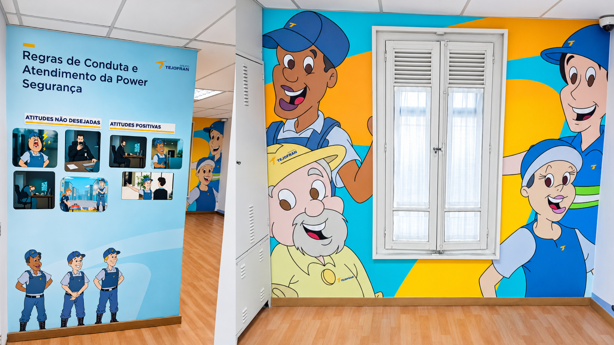

TEJOFRAN.
Projeto de ambientação corporativa desenvolvido acompanhando diferentes etapas do processo, da visita técnica à criação e preparação dos arquivos para produção.

O PROJETO.
Neste projeto, participei do desenvolvimento da ambientação de um espaço corporativo, acompanhando o trabalho desde o levantamento inicial até a preparação dos materiais para execução.
A proposta foi desenvolvida considerando o espaço físico, as proporções das paredes e a aplicação dos elementos gráficos no ambiente.
DA VISITA
À EXECUÇÃO.
Visita técnica e levantamento do espaço
Desenvolvimento da criação
Ajustes e fechamento dos arquivos
Acompanhamento da execução
PROCESSO.
O desenvolvimento envolveu a adaptação da criação ao ambiente real, trabalhando medidas, posicionamento e proporções antes da produção.
Além da parte visual, o projeto exigiu atenção ao fechamento dos arquivos e à forma como cada elemento seria produzido e aplicado.

DESIGN
NO ESPAÇO REAL.
O resultado foi uma ambientação aplicada ao espaço corporativo, transformando o projeto desenvolvido digitalmente em uma solução física integrada ao ambiente.